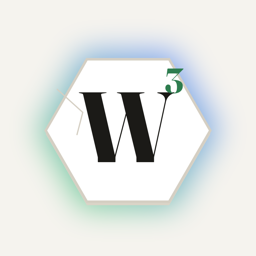

Glass Words Support
A honeycomb of letters where every letter can only be used so many times, for iPhone and iPad
Glass Words is a word game on a hex board. Drag a path through touching tiles to spell a word and lift your finger to play it. Every letter has a limited number of uses: spend one too often and it cracks, then shatters, leaving a hole you cannot cross.
How to play
- Draw a word by dragging through touching tiles. The path lights up and burns blue as the word gets long. Words must be at least three letters.
- Lift to play. A valid word scores and each letter used loses one use; the small number on a tile shows how many are left. Not a word, or already played? The path just fades.
- Letters run out. A tile at its last use is red and cracked. Use it once more and it shatters.
- Special tiles. Wild stands for any letter, once. Toggle flips to its other letter each use. Battery heals its neighbours when it runs out; Rot drains them. Stone is just in the way.
Rounds and the weekly score
Rounds come in a cycle: three regular, then gravity (shattered tiles leave gaps and the letters above fall in; every cleared tile is worth extra), three regular, then fog of war (you start seeing only the middle; each word lights the tiles beside it). Everyone plays the same boards each week. Your weekly score is every round you play added up, and the Game Center leaderboard resets every Monday. Par is what a strong round scores on that board.
Purchases and ads
An ad shows on Next round after every second round. Ad-free passes for a week, a month or a year remove them and are sold in Settings (the gear on the home screen), where the terms are shown. Use Restore purchases there after reinstalling or changing devices. Subscriptions are managed in your Apple ID settings.
Troubleshooting
- No sound or haptics: check the switches in Settings and the device's silent switch.
- Leaderboard missing: sign in to Game Center in the iOS Settings app, then return to the home screen.
- A pass didn't arrive: Settings → Restore purchases. If it still doesn't show, email us with the receipt.
Contact
Bugs, ideas, and questions: smythe.jared@gmail.com.